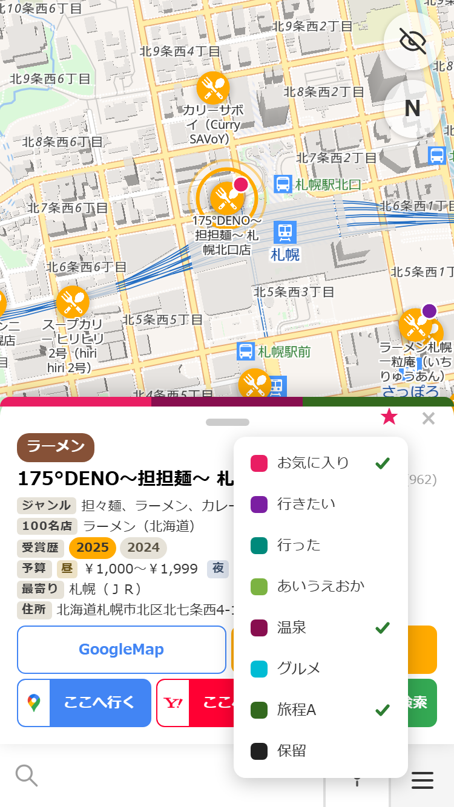
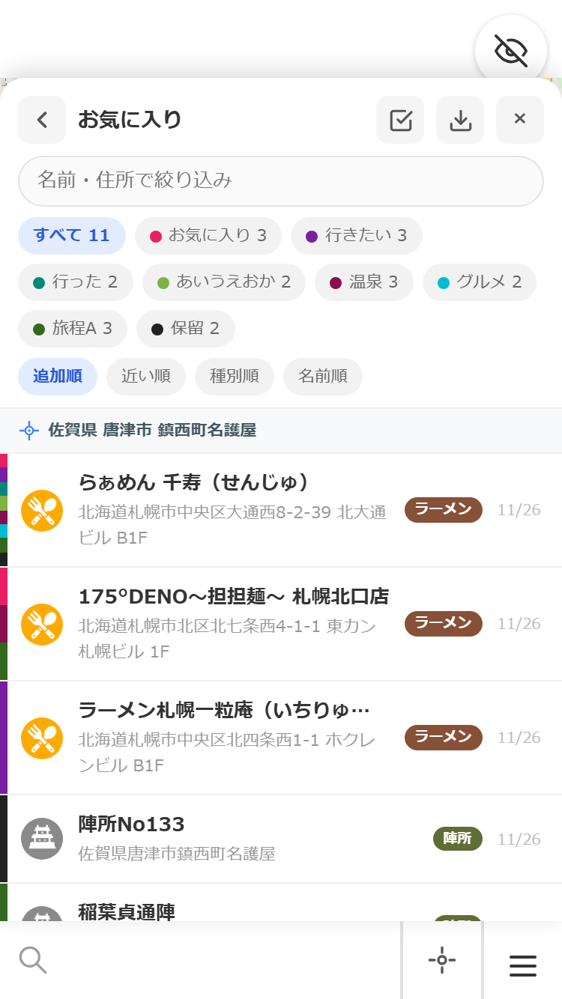
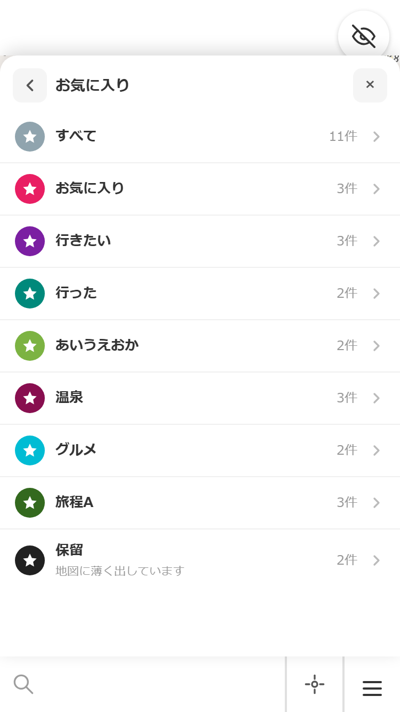
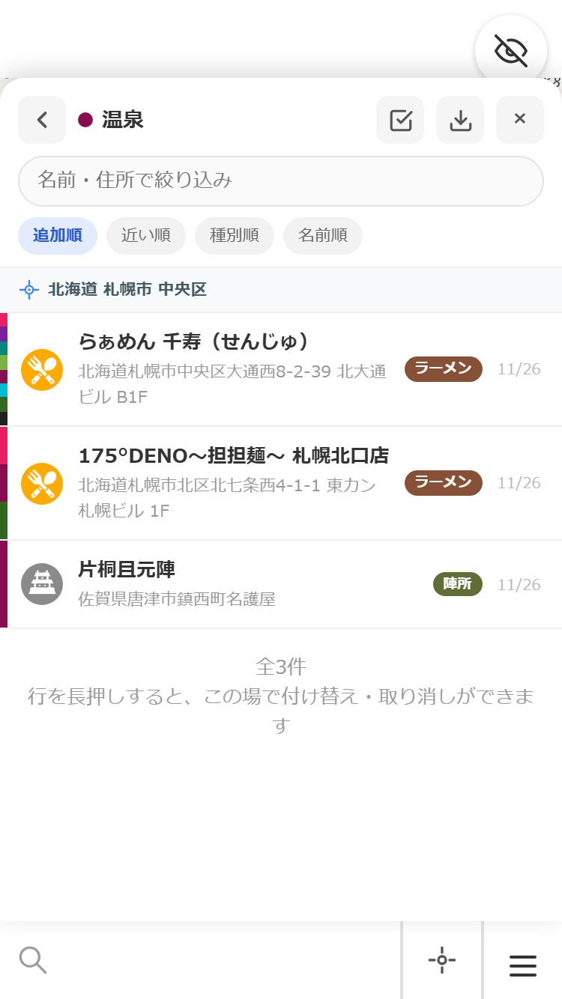
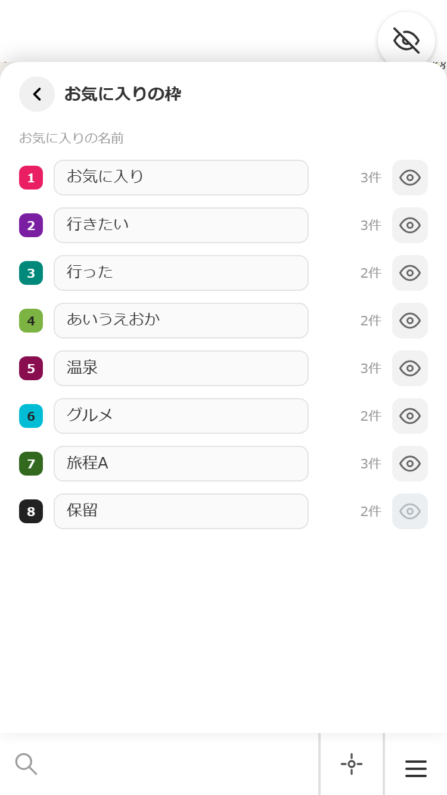
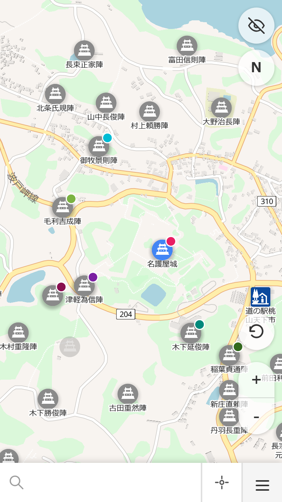

画面はすべて実アプリを iPhone SE3 の 375×667 で開いて撮ったもので、端末枠の中は実寸です（2倍の解像度で撮り、CSS px の寸法で置いています）。
枠を8つに広げたのは撮影のときだけの試作で、FAV_SLOTS と色をページの中で書き足し、5〜8枠のピンのレイヤーも同じ形で足しています。
アプリのコードは変えていません。二段構えと設定の案は、実アプリの部品（.nearby-item・.lords-head・.favname-row・.fxp-btn）をそのまま使って並べ替えています。
撮り直しは python -I mock/fav8-preview/capture8.py . mock/fav8-preview で行えます。
いまの作りのまま8枠にすると、絞り込みのチップが3段になり（名前が6文字なら4段）、一覧の始まりが下がります。 二段構えでは、一段目に枠の一覧を出し、押した枠の中身を二段目に出します。二段目にはチップが無いので、一覧はいまの4枠のときより上から始まります。 「すべて」は一段目のいちばん上に残します（書き出しと選択モードの一括解除が「すべて」か1つの枠かで対象を決めているため）。 選択と書き出しのボタンは二段目にだけ置きます。



| 状態 | チップの高さ | 一覧の始まり（y） | 一覧の高さ |
|---|---|---|---|
| 現行・4枠 | 56px | 272px | 343px |
| 現行のまま8枠（上の画面） | 87px | 303px | 312px |
| 案・二段目 | — | 209px | 406px |
値はすべて上の画面を撮ったときに getBoundingClientRect で計ったものです。
パレットは一覧とは別の部品なので、二段構えにしても大きさは変わりません。いまの1列のままだと高さが282pxになり、シートの「食べログ」などのボタンに重なります。 2列×4段にすると266×146pxで、いまの4枠のパレット（144×146px）と同じ高さに収まります。位置はいまと同じ決め方（★の右端に揃え、下に入れば下へ）のままです。

いまの作りのまま8行にすると、区画の高さは323px（4行のときは163px）になります。 案では、設定には色の点を並べたボタンを1つだけ置き、押した先の画面で名前と「薄く出す」を編集します。押した先の行はいまの行そのままです。 ボタンの形は、同じ設定画面の「同期」「バックアップ」のボタン（高さ38px）に揃えています。



いまの4色を決めたときと同じ計算（色差は CIEDE2000、文字のコントラストは WCAG の比）で、Material Design の色から選びました。 今回は、色覚シミュレーション（1型・2型）でも、いまの4色どうしの最小（12.6）を下回らないことを条件に足しています。 値はすべて計算で出したもので、目視ではありません。
| 枠 | 色 | 地図の印 | 他の枠でいちばん近い色との差 | 地図の色でいちばん近いものとの差 | 白文字 / 黒文字 |
|---|---|---|---|---|---|
| 1 | 1 #E91E63 | — | 16.3（続100名城 #EA4335） | 白 | |
| 2 | 2 #7B1FA2 | — | 18.4（選択リング #546E7A） | 白 | |
| 3 | 3 #00897B | — | 19.5（選択リング #546E7A） | 白 | |
| 4 | 4 #7CB342 | — | 27.4（お城 #8A8A8A） | 黒 | |
| 5 | 5 #880E4F | 18.4（枠2） | 31.8（続100名城 #EA4335） | 白 9.45 | |
| 6 | 6 #00BCD4 | 21.7（枠3） | 25.2（お城 #8A8A8A） | 黒 7.01（白は2.30） | |
| 7 | 7 #33691E | 22.4（枠3） | 30.0（お城 #8A8A8A） | 白 6.60 | |
| 8 | 8 #212121 | 27.9（枠5） | 26.6（選択リング #546E7A） | 白 16.10 |
8色どうしの差の最小は 18.4（枠2と枠5）で、いまの4色どうしの最小 27.9 より小さくなります。 足す4色と地図の色との差の最小は 25.2 で、いまの4色の最小 16.3 より大きく、地図の色との区別は悪くなりません。 色覚シミュレーションでの8色どうしの最小は 12.6 で、いまの4色（枠1と枠4）と同じです。


一覧の左端の色帯は、上の「1. お気に入り一覧」の画面に出ています。いちばん上の行は8枠すべてに入れた店で、行が76pxなので1色あたり約9.5pxです。